Neurogenesis, differentiation and neuronal survival
From neural progenitors to mature neuronal populations
Scuola di Psicologia, University of Florence
Neurogenesis, differentiation and neuronal survival
Once the nervous system has been regionalized, each region still has to be populated with the right number and the right types of cells.
This requires three closely connected processes:
neurogenesis: generation of neurons from neural progenitorsdifferentiation: acquisition of a specific neuronal identityneuronal survival: selective maintenance or elimination of newly generated neurons
From a progenitor to a neuronal population
Neural development is not simply the production of neurons.
A progenitor population must be expanded, neurons must be generated at the correct time, acquire the correct identity, migrate to the correct place, and finally survive.
The final organization of the nervous system therefore depends on both constructive and selective processes.
Neurogenesis
Neurogenesis is the process by which neural progenitor cells generate neurons.
During prenatal development, enormous numbers of neurons are produced in a relatively short period of time.
Different brain regions and different neuronal populations are generated according to distinct developmental schedules.
During prenatal development, neurogenesis reaches an extraordinary rate.
At its peak, the human developing brain can generate approximately:
250k neurons per minute
 first expand through symmetric proliferative divisions, then transition into radial glial cells (RGCs). RGCs generate neurons directly or indirectly through intermediate progenitors (IPs) and basal radial glia (bRGs). As neurogenesis proceeds, newly generated neurons migrate toward the cortical plate, with deep-layer neurons produced earlier and upper-layer neurons later. During late neurogenesis, progenitors also generate macroglial cells such as astrocytes and oligodendrocytes.")
Neural progenitors in the developing cortex
Early cortical progenitors are located close to the cerebral ventricles in the ventricular zone.
Many of these progenitors later acquire characteristics of radial glial cells.
Radial glial cells have two important developmental roles:
- they act as neural progenitors
- their long processes provide a scaffold for neuronal migration
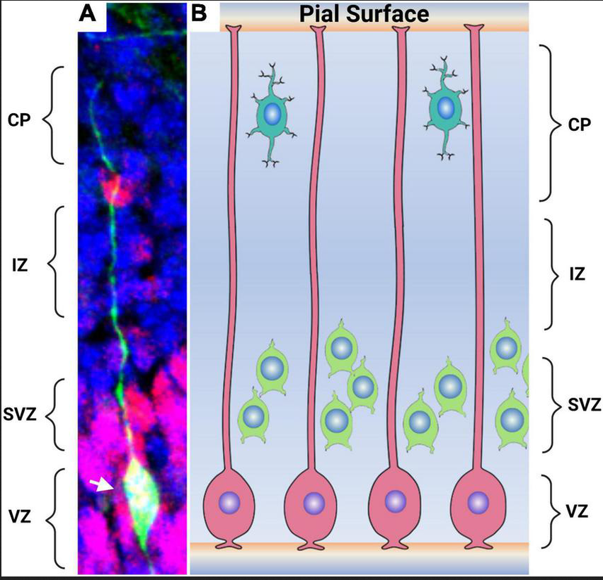
Expansion before differentiation
At the beginning of development, the priority is to increase the progenitor pool.
Later, progressively more divisions generate neurons and other neural cell types.
Proliferative divisions
Both daughter cells remain progenitors.
Result: expansion of the progenitor population.
Neurogenic divisions
One or both daughter cells leave the proliferative state and begin a neuronal developmental program.
Result: production of neurons.
Development therefore requires a balance between making more progenitors and using progenitors to make neurons.
Symmetric and asymmetric divisions
The outcome of a progenitor division can be different for the two daughter cells.
A symmetric proliferative division (or horizontal division) can generate:
progenitor: progenitor + progenitor
An asymmetric neurogenic division (or vertical division) can generate:
progenitor: progenitor + neuron
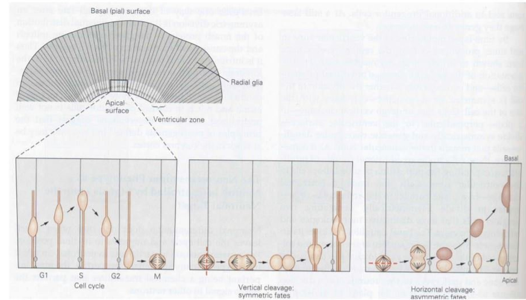
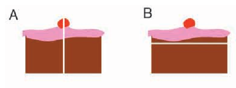
Intermediate progenitors amplify neurogenesis
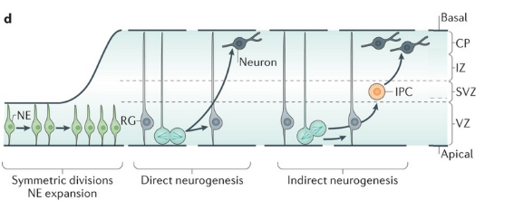
Not every neuron is generated directly by an apical progenitor.
Radial glial cells can also generate intermediate progenitor cells, which divide away from the ventricular surface.
Intermediate progenitors provide an additional amplification step. This strategy increases the number of neurons that can be produced from the original progenitor population.
Radial glia: progenitors and scaffolds
A newly generated cortical neuron must leave the proliferative zones and reach its final position in the cortical wall.
Many excitatory cortical neurons migrate along the long processes of radial glial cells.
The same cell type therefore participates in both:
- generating neurons
- guiding their migration
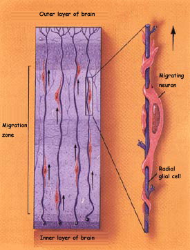
From the ventricular zone to the cortical plate
The developing cortex is organized into transient developmental zones.
New neurons are generated near the ventricle and migrate toward the developing cortical plate.
As development proceeds:
- progenitors remain concentrated in proliferative zones
- newly generated neurons become postmitotic
- neurons migrate outward
- successive neuronal populations occupy different cortical positions
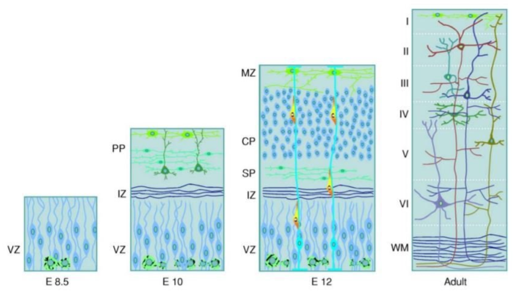
The cortex is built inside-out
Most cortical projection neurons are generated in a characteristic temporal sequence.
Earlier-born neurons settle in deeper cortical layers, whereas later-born neurons migrate past them and occupy progressively more superficial layers.
Simplified sequence:
early neurogenesis -> deep layers
late neurogenesis -> superficial layers
, radial glial cells (RG), intermediate progenitors (IP), and outer radial glial cells (oRG) generate different neuronal classes in a stereotyped temporal order. Early-born neurons include Cajal–Retzius cells (CR) and subplate neurons (SP), followed by corticothalamic projection neurons (CThPN), subcerebral projection neurons (SCPN), layer IV granule neurons (layer IV GN), and later callosal projection neurons (CPN). Newly generated neurons migrate outward past earlier-born neurons, producing the characteristic inside-out organization of the cerebral cortex.")
Neuronal birthdate carries information
The time at which a progenitor undergoes its final mitosis is strongly related to the identity that its neuronal descendants can acquire.
Developmental time therefore acts as another source of information.
In the previous chapter, cells used spatial signals to understand where they were.
During neurogenesis, cells also change their developmental potential according to when they are generated.
Heterochronic transplantation
Heterochronic transplantation of cortical progenitors
Question
Does a cortical progenitor acquire its laminar identity only from the environment in which it is placed?
Approach
Progenitor cells are transplanted between hosts at different developmental ages.
Observation
The capacity of transplanted progenitors to adopt a new laminar fate depends on their developmental age and cell-cycle state.
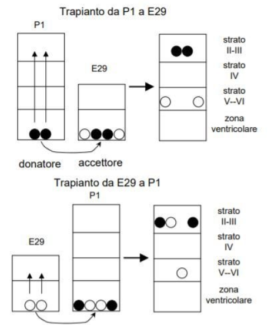
What heterochronic transplants show
Cortical progenitors do not remain equally flexible throughout development.
Their competence changes with developmental time.
Younger progenitors can still respond to environmental information and can, under appropriate conditions, adopt later neuronal fates.
As progenitors progress through development, their possible fates become progressively restricted.
After commitment and cell-cycle exit, neuronal identity becomes much less flexible.
A cell’s fate depends on both the environment it encounters and the developmental state of the cell when that signal is received.
Differentiation
Generating a neuron is only the beginning.
The newborn neuron must acquire a particular identity.
Differentiation includes the acquisition of properties such as:
- patterns of gene expression
- neuronal morphology
- neurotransmitter phenotype
- receptors and ion-channel expression
- characteristic connectivity
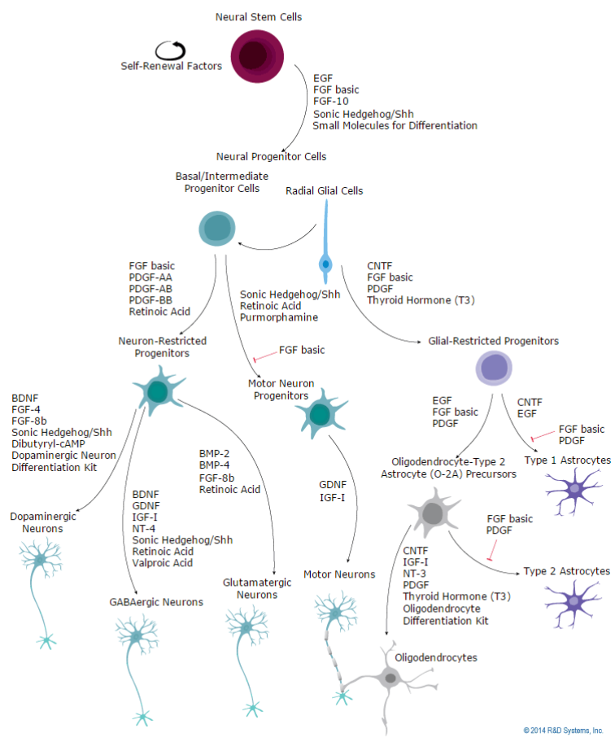
Intrinsic and extrinsic factors
Intrinsic factors
Information already present inside the cell can bias developmental fate.
Examples include:
- transcription factors
- asymmetric inheritance of cellular components
- previous developmental history
- current state of competence
Extrinsic factors
The cell also receives information from its environment.
Examples include:
- secreted signaling molecules
- signals from neighboring cells
- extracellular matrix
- target-derived factors
Neuronal identity emerges from the interaction between intrinsic state and extracellular signals.
Notch-Delta: lateral inhibition
Neighboring progenitor cells can influence whether they adopt a neuronal or support cell fate through Notch-Delta signaling. This process is called lateral inhibition and generates salt and pepper patterns.
A small initial difference between neighboring cells can be amplified:
- a cell with stronger Delta activity (proneural) is driven toward a neuronal fate
- Delta activates Notch in neighboring cells
- Notch suppresses the proneural program in those cells (they remain in a progenitor/non-neuronal fate)

Numb and asymmetric fate
Cell division can distribute molecules unequally between daughter cells.
One example is Numb, which can antagonize Notch signaling.
If the two daughter cells inherit different amounts of fate-regulating molecules, they can respond differently even though they originated from the same progenitor.
Asymmetric inheritance therefore provides one mechanism through which cell division can create different developmental trajectories.
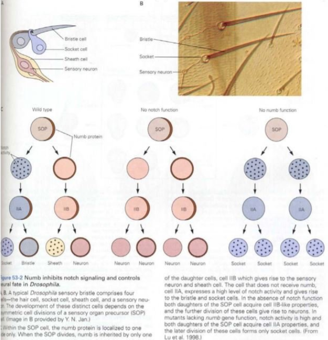
Transcription factors can constrain fate and migration
Intrinsic developmental programs can control not only neuronal identity, but also the ability of neurons to reach the correct region.
An example is provided by Dlx1/Dlx2, transcription factors involved in the development of forebrain GABAergic interneurons.
Disrupting this program strongly alters the normal migration of interneuron precursors toward the neocortex.
Disruption of the Dlx developmental program reduce the number and function of cortical interneurons. This produces less inhibitory control of cortical circuits: In Dlx1 mutant mice, interneuron loss produces spontaneous generalized epileptic activity.
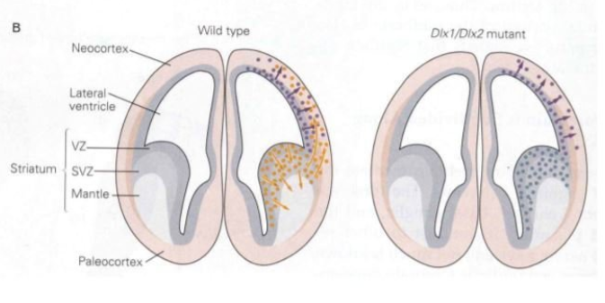
Dlx1/Dlx2-expressing interneuron progenitors are generated in the ganglionic eminences of the ventral telencephalon, adjacent to the developing striatum.
From there, they migrate tangentially into the developing cerebral cortex, where they differentiate into cortical GABAergic interneurons.
The environment also instructs cell fate
The fate of a developing cell is not determined only by where it was born.
Cells encounter new extracellular environments as they migrate.
These environments contain different:
- signaling molecules
- neighboring cell types
- extracellular matrix components
- target tissues
A migrating precursor can therefore receive new developmental instructions along its path.
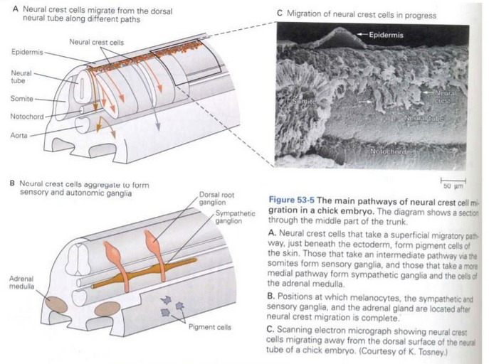
Neural crest: one population, many outcomes
Neural crest cells provide a clear example of multipotent progenitors whose fate depends strongly on the signals encountered during migration.
Neural crest derivatives include, among others:
- sensory neurons
- autonomic neurons
- enteric neurons
- Schwann cells
- melanocytes
- smooth-muscletarget=“_blank”}
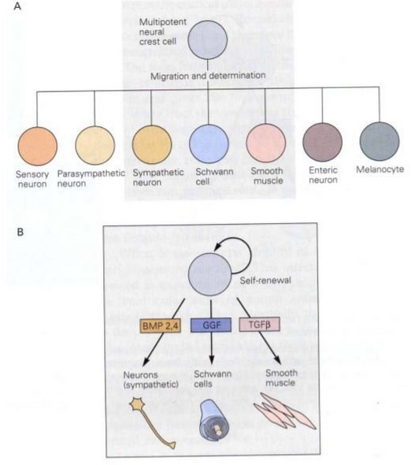
Cell fate is an interaction
There is rarely a single factor that completely determines what a neural progenitor will become.
A useful way to think about differentiation is:
cell fate = intrinsic state + extracellular signals + developmental time + competence
The same extracellular signal can produce different outcomes in different cells because each cell has a different history, expresses different receptors, and activates different gene-regulatory programs.
Developmental signals provide information, but the cell must be competent to interpret it.
Neuronal survival
Neurogenesis produces more neurons than will ultimately be retained in many developing neuronal populations.
Becoming a neuron therefore does not guarantee becoming part of the mature nervous system.
Newly generated neurons must also pass through a period of selective survival.
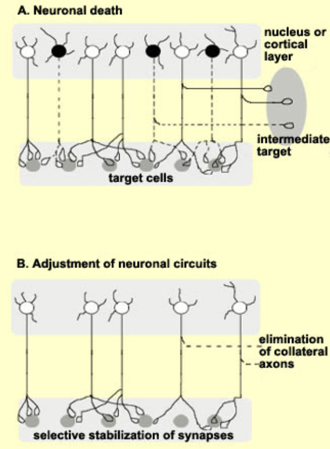
Development includes programmed cell death
Programmed cell death is a normal component of nervous system development.
It is not the consequence of developmental failure.
Constructive processes
- proliferation
- neurogenesis
- migration
- differentiation
- growth
Regressive processes
- programmed cell death
- elimination of transient cells
- elimination of inappropriate projections
- later elimination of synapses and branches
The mature nervous system emerges through a balance between production and selective elimination.
Apoptosis is not necrosis
Apoptosis
A regulated form of cell death.
Typical features include:
- cell shrinkage
- chromatin condensation
- fragmentation into apoptotic bodies
- removal by phagocytic cells
- little inflammatory response
Necrosis
Usually follows severe cellular injury.
Typical features include:
- cell swelling
- membrane disruption
- release of intracellular contents
- inflammatory response
Apoptosis is not necrosis2
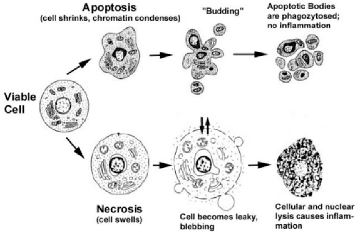
Apoptosis is an active molecular program
Developmental apoptosis is an active biological program controlled by intracellular molecular pathways.
Examples of important regulators include:
BCL-2 family proteinsthat can promote survivalBAXand related proteins that promote apoptosiscaspasesthat execute the cell-death program
Cell survival therefore depends on the balance between pro-survival and pro-apoptotic signals.
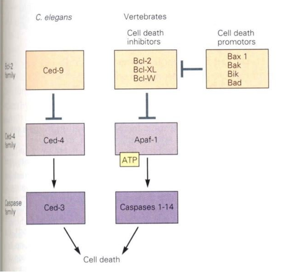
Why eliminate neurons during development?
Programmed cell death can contribute to several developmental functions.
It can help:
- match the size of interconnected neuronal populations
- remove cells with inappropriate identities or connections
- eliminate cells that served only a transient developmental function
- refine developing structures
One of the most important principles of developmental neuronal survival is that neurons interact with the tissues they innervate.
Many developing neuronal populations initially contain more neurons than their targets can support.
Neurons that successfully interact with appropriate targets receive survival signals.
Neurons that do not receive sufficient support activate the apoptotic program.
Hamburger and Levi-Montalcini
Experiments in chick embryos by Viktor Hamburger and Rita Levi-Montalcini showed that peripheral target tissues influence the survival of developing neurons.
Manipulating the developing limb changed the number of spinal motor neurons that survived:
- removing target tissue increased neuronal loss
- adding extra target tissue increased neuronal survival

The target-manipulation experiment
Changing the amount of target tissue
Manipulation
The amount of peripheral tissue available to developing neurons is experimentally reduced or increased.
Result
Less target tissue → more neuronal death
More target tissue → more neuronal survival
Interpretation
Targets provide a limited resource required for neuronal survival.
The target-manipulation experiment 2

The neurotrophic hypothesis
The classical neurotrophic hypothesis proposes that developing neurons compete for a limited amount of target-derived survival factors.
The logic is:
- many neurons project toward a target
- the target produces limited trophic support
- neurons compete for access to this support
- neurons obtaining sufficient support survive
- neurons receiving insufficient support undergo apoptosis
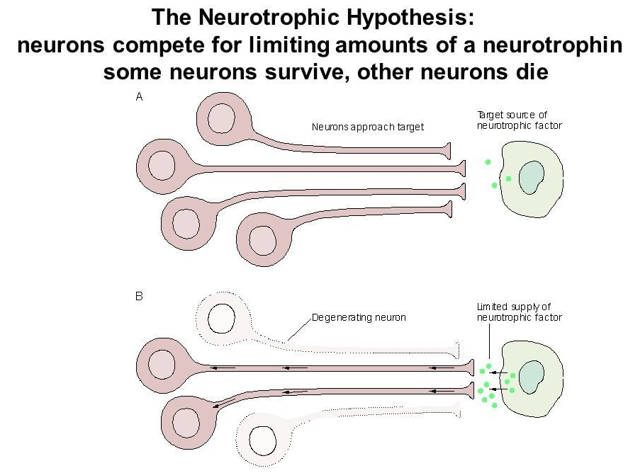
NGF and neurotrophic factors
NGF (Nerve Growth Factor) provided a molecular mechanism for the idea that target tissues can support neuronal survival.
NGF is essential for the development and survival of particular populations of peripheral sensory and sympathetic neurons.
It is not a universal survival factor for every neuron.
Different neuronal populations depend on different members of the broader family of neurotrophic factors.
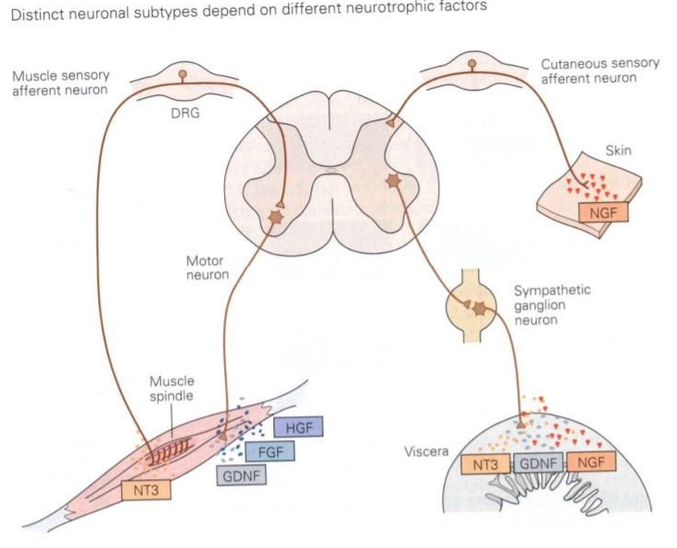
Neurotrophic factors
Neurotrophic factors are extracellular signals that promote the survival, growth and differentiation of specific neuronal populations.
NGF: Nerve Growth Factor
NGF is especially important for the survival and development of particular populations of peripheral sensory and sympathetic neurons.
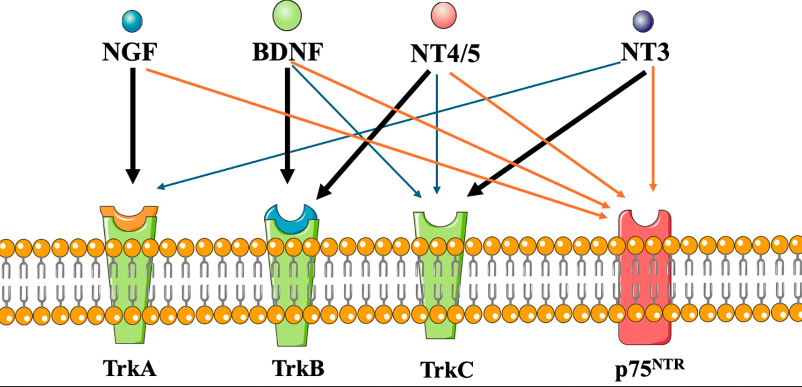
BDNF: Brain-Derived Neurotrophic Factor
BDNF supports the survival and differentiation of several neuronal populations in both the peripheral and central nervous system.
It also has important roles later in development in:
- dendritic and axonal growth
- synapse formation
- synaptic plasticity
Different neurons depend on different neurotrophic signals.
NGF, BDNF, NT-3, and NT-4 belong to the neurotrophin family and act through specific Trk receptors.
Competition matches neurons to their targets
Neurotrophic competition provides a mechanism for matching the size of a neuronal population to the size of the tissue it innervates.
Small or reduced target
less trophic support → stronger competition → more neuronal death
Large or additional target
more trophic support → weaker competition → more neuronal survival
Image: relation between target size and percentage of neuronal survival
Suggested file: images/2_ns_target_matching.png
Survival signals control the apoptotic program
Target-derived trophic factors do not simply “feed” neurons.
They activate receptors and intracellular pathways that influence the balance between survival and apoptosis.
The extracellular environment can therefore regulate whether the intrinsic cell-death machinery is:
inhibited → neuron survives
or
activated → neuron undergoes apoptosis
This is another example of the general developmental principle introduced earlier:
extracellular signals regulate intracellular molecular programs and gene expression.
Constructive and regressive processes
Constructive
- progenitor expansion
- neurogenesis
- migration
- differentiation
- neuronal growth
Regressive
- programmed neuronal death
- elimination of inappropriate cells
- later pruning of axons and synapses
The mature nervous system is not created by simply adding cells.
It is produced by repeated cycles of generation, selection, and refinement.
From cells to circuits
At this point development has generated neuronal populations with characteristic identities and has adjusted how many of those neurons survive.
The next problem is how these neurons become connected into functional circuits:
- how axons find their targets
- how synapses are formed
- how connections are refined
- how axons become myelinated
Neurogenesis creates the cells. The next stage of development must connect them.